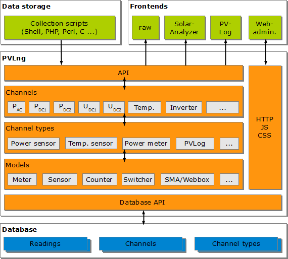
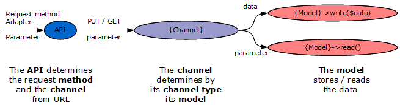

Software layers
The whole system consists of 3 essential layers:

● External systems, which handles
o the data acquisition or
o the data analysis
● PVLng as core component
● A MySQL database for data storage
External systems
The most data storage work must be done by external scripts. They obtain the measuring data from e.g. sensors and push them via API into the system.
In these scripts are simple to use functions defined, which pushes the data and handles errors.
Scripts to push your data to other sides are also available, for photovoltaic plants I recommend PV-Log or PVOutput.
The web front end handles all channel definitions, their attributes and the organization of channels in the channel tree and a charting module for simple visualizations.
PVLng layers
The system is build (bottom-up) by
● Models handles a very special kind of data/sensor
● Channel types implements a set set of predefined sensor types
● Channels represent concrete sensors
● Channel groups handles special needs about grouping or calculation/transformation
The following documentation will mainly describe the characteristics of PVLng and the other layers only if required.
Database
The database have 3 tables for channel organization and 2 tables for readings.
Data flow
The general information and data flow is like this:

Created with the Personal Edition of HelpNDoc: Free help authoring tool